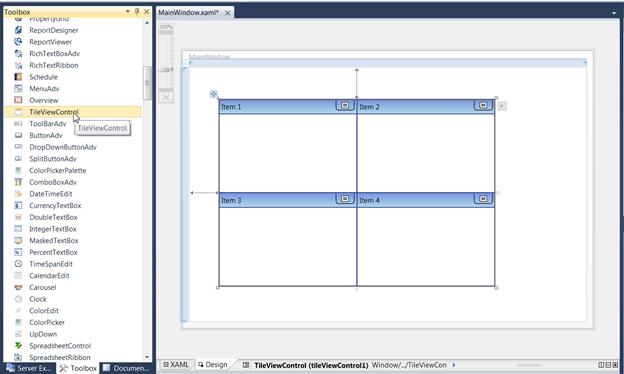
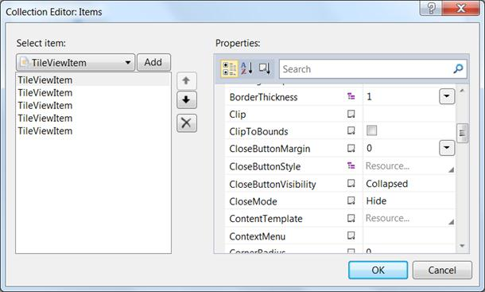

The following are the steps to create the TileViewControl using Visual Studio.
1. Drag TileViewControl from the Toolbox and drop it in the Designer area. It will generate the TileViewControl.

Figure 1058: Dragging TileViewControl to Visual Studio Designer
2. To add items to the TileViewControl using the Collection Editor, select the TileViewControl and look at its properties.
3. Click the button in the Items property. This will open the Collection Editor.

Figure 1059: Collection Editor for TileViewControl
4. Using the Collection Editor, add the GroupBarItems and configure their properties.